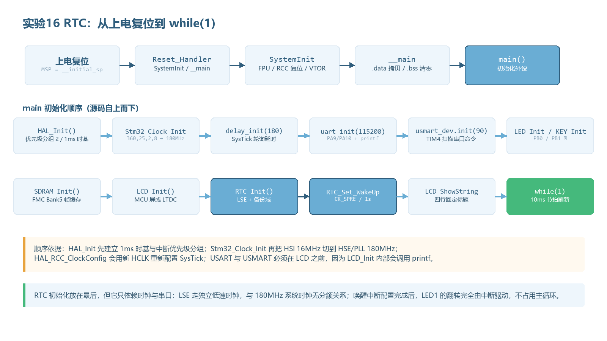
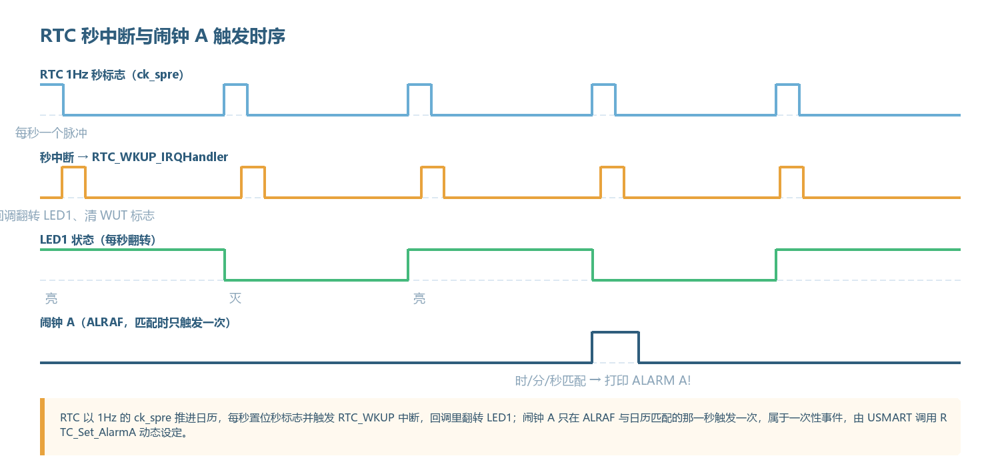
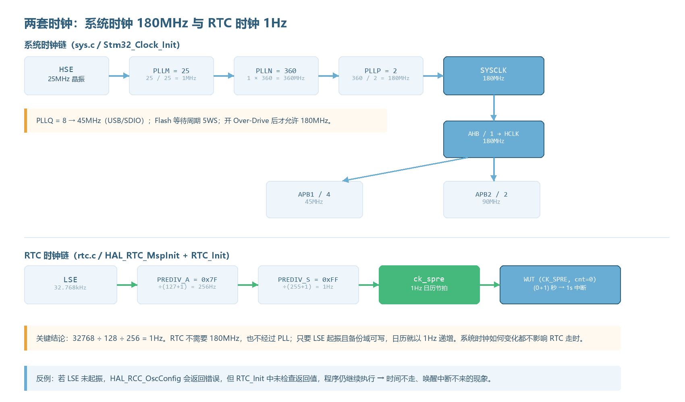
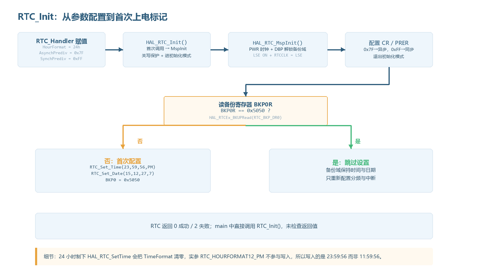
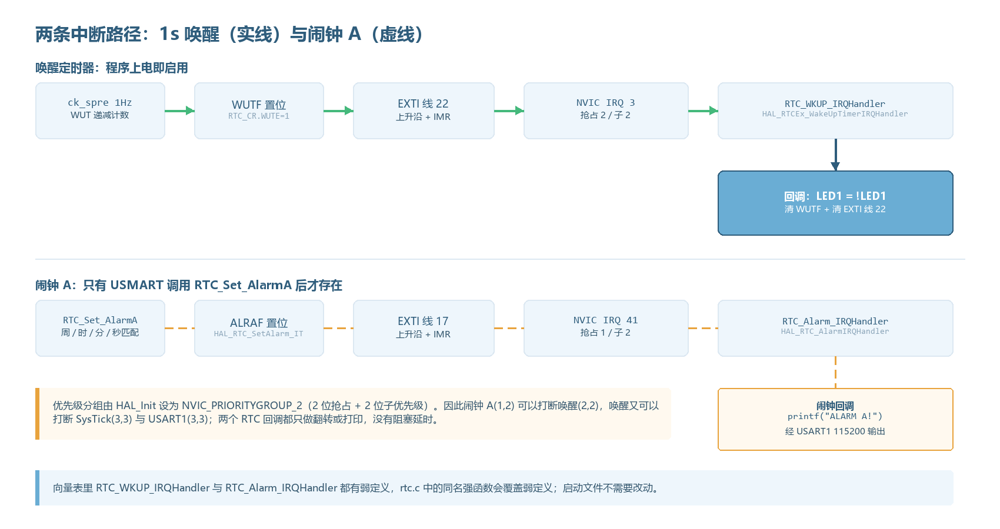
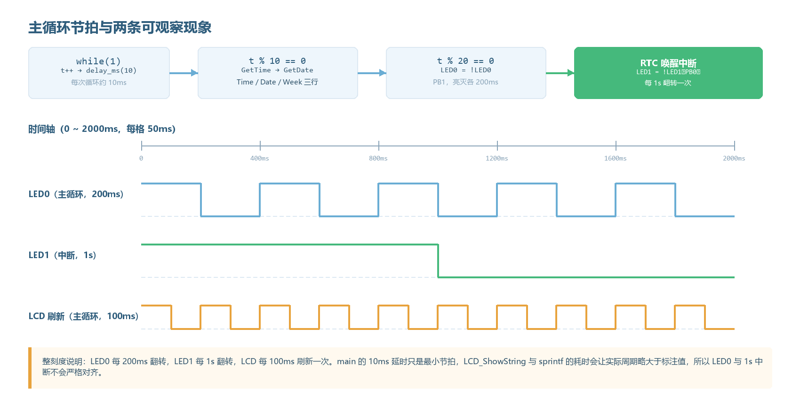

01 实验目标与硬件资源
本实验在阿波罗 STM32F429 开发板上使用片内 RTC 外设做日历：LCD 显示时间、日期与星期；1 秒唤醒中断翻转 DS1；串口 USMART 可以修改时间、日期、闹钟与唤醒周期。RTC 时钟源为外部 32.768kHz 晶振 LSE，不经过主 PLL。
| 资源 | 连接 / 参数 | 源码位置 |
|---|---|---|
| DS0 | PB1，推挽输出，初始化时置高（灭） | HARDWARE/LED/led.c |
| DS1 | PB0，推挽输出，由唤醒中断翻转 | HARDWARE/LED/led.c |
| KEY0 / KEY1 | PH3 / PH2，上拉输入 | HARDWARE/KEY/key.c |
| USART1 | PA9 / PA10，115200-8-N-1，兼作 printf 与 USMART | SYSTEM/usart/usart.c |
| RTC | LSE 32.768kHz，备份寄存器 BKP0R 记录是否首次配置 | HARDWARE/RTC/rtc.c |
| LCD | 按 lcddev.id 选屏，RGB 屏走 LTDC，帧缓存 0xC0000000 | HARDWARE/LCD/lcd.c |
02 目录与文件分工
| 文件 | 负责什么 | 本页看什么 |
|---|---|---|
USER/main.c | 初始化顺序、LCD 固定文字、主循环刷新 | 全文与 while(1) |
USER/system_stm32f4xx.c | SystemInit、SystemCoreClock | FPU、RCC 复位、VTOR |
USER/stm32f4xx_it.c | 内核异常与 SysTick_Handler | RTC 中断不在这里 |
CORE/startup_stm32f429xx.s | 向量表、栈堆、Reset_Handler | Stack 0x400 / Heap 0x200 |
SYSTEM/sys/sys.c | Stm32_Clock_Init | PLL 参数与 180MHz |
SYSTEM/delay/delay.c | SysTick 轮询延时 | 是否依赖中断 |
SYSTEM/usart/usart.c | USART1 初始化与 fputc | printf 重定向 |
HARDWARE/RTC/rtc.c | RTC 初始化、时间日期、唤醒、闹钟 | 本页核心 |
HARDWARE/LED/led.c | PB0 / PB1 推挽输出 | DS0 / DS1 |
HARDWARE/KEY/key.c | PH2 / PH3 上拉输入 | 本实验主循环未用按键 |
HARDWARE/SDRAM/sdram.c | FMC SDRAM 初始化 | RGB 屏帧缓存前提 |
HARDWARE/LCD/lcd.c | 读屏 ID、LCD 与 LTDC 初始化 | LCD_Init 内的 printf |
USMART/usmart.c | TIM4 周期扫描串口命令 | 函数注册表 |
RTC_WKUP_IRQHandler 与 RTC_Alarm_IRQHandler 只是弱定义；rtc.c 里的同名函数是强定义，链接时覆盖弱符号，所以不需要改启动文件。03 启动流程总览


RTC 用 1Hz 的 ck_spre 推进日历，每秒产生一次秒标志并进 RTC_WKUP 中断，回调只做翻转 LED1 和清标志这类短动作；闹钟 A 是“到点触发一次”的事件，靠 ALRAF 与日历匹配，由 USMART 调用 RTC_Set_AlarmA 动态设定。
main 函数（原文）
int main(void)
{
RTC_TimeTypeDef RTC_TimeStruct;
RTC_DateTypeDef RTC_DateStruct;
u8 tbuf[40];
u8 t=0;
HAL_Init(); //初始化HAL库
Stm32_Clock_Init(360,25,2,8); //设置时钟,180Mhz
delay_init(180); //初始化延时函数
uart_init(115200); //初始化USART
usmart_dev.init(90); //初始化USMART
LED_Init(); //初始化LED
KEY_Init(); //初始化按键
SDRAM_Init(); //初始化SDRAM
LCD_Init(); //初始化LCD
RTC_Init(); //初始化RTC
RTC_Set_WakeUp(RTC_WAKEUPCLOCK_CK_SPRE_16BITS,0); //1秒钟中断一次
POINT_COLOR=RED;
LCD_ShowString(30,50,200,16,16,"Apollo STM32F4/F7");
LCD_ShowString(30,70,200,16,16,"RTC TEST");
LCD_ShowString(30,90,200,16,16,"ATOM@ALIENTEK");
LCD_ShowString(30,110,200,16,16,"2016/1/13");
while(1)
{
t++;
if((t%10)==0)
{
HAL_RTC_GetTime(&RTC_Handler,&RTC_TimeStruct,RTC_FORMAT_BIN); //先读时间
sprintf((char*)tbuf,"Time:%02d:%02d:%02d",RTC_TimeStruct.Hours,RTC_TimeStruct.Minutes,RTC_TimeStruct.Seconds); //拼字符串
LCD_ShowString(30,140,210,16,16,tbuf); //写显存
HAL_RTC_GetDate(&RTC_Handler,&RTC_DateStruct,RTC_FORMAT_BIN); //再读日期，同时解锁影子寄存器
sprintf((char*)tbuf,"Date:20%02d-%02d-%02d",RTC_DateStruct.Year,RTC_DateStruct.Month,RTC_DateStruct.Date); //年份补 20
LCD_ShowString(30,160,210,16,16,tbuf);
sprintf((char*)tbuf,"Week:%d",RTC_DateStruct.WeekDay);
LCD_ShowString(30,180,210,16,16,tbuf);
}
if((t%20)==0)LED0=!LED0; //每200ms,翻转一次LED0
delay_ms(10); //主循环最小节拍 10ms
}
}
HAL_Init()：按复位后的 16MHz HSI 建立 1ms 时基，并把分组固定为NVIC_PRIORITYGROUP_2。Stm32_Clock_Init(360,25,2,8)：HSE 25MHz 经 PLL 切到 180MHz，函数内部会重算SystemCoreClock并重新校准 SysTick。delay_init(180)：把fac_us置为 180，让delay_us的计数值与 HCLK 对齐。uart_init(115200)：USART1 同时服务printf与 USMART，必须早于任何打印。usmart_dev.init(90)：按 90MHz 的 APB1 配置 TIM4，建立串口命令扫描。LED_Init()/KEY_Init()：PB0/PB1 推挽输出、PH2/PH3 上拉输入；本实验只用 LED。SDRAM_Init() → LCD_Init()：先让显存可用，再初始化屏与 LTDC。RTC_Init()：解锁备份域 → 选 LSE → 配 1Hz 日历 → 首次上电写默认时间。RTC_Set_WakeUp(CK_SPRE_16BITS,0)：打开 1s 唤醒中断，DS1 的翻转从此与主循环解耦。while(1)：只负责读取与显示，计时全部由 RTC 硬件完成。
顺序为什么不能随意换
- HAL_Init 在时钟切换之前：它按复位后的 HSI 16MHz 建立 1ms SysTick；
HAL_RCC_ClockConfig结尾会用新的 HCLK 重新调用HAL_InitTick，所以切到 180MHz 后 1ms 仍然准确。 - uart_init 在 LCD_Init 之前：
LCD_Init内部会printf(" LCD ID:%x\r\n",lcddev.id)，串口没初始化就打印不出来。 - usmart 在 LCD 之前：USMART 的 TIM4 扫描只依赖 90MHz 的 APB1 时钟，但它提供的命令包含
RTC_Set_Time等函数，放在外设初始化前不会影响外设本身。 - SDRAM 在 LCD 之前：RGB 屏的帧缓存被链接到
0xC0000000，SDRAM 控制器没初始化就无法写显存。 - RTC 放最后：LSE 与主 PLL 无关，只依赖 PWR 时钟与备份域访问；放在最后不会影响前面任何外设。
04 启动文件与向量表
| 项目 | 值 | 含义 / 来源 |
|---|---|---|
| Stack_Size | 0x400（1KB） | 启动文件 AREA STACK，__initial_sp 指向栈顶 |
| Heap_Size | 0x200（512B） | 启动文件 AREA HEAP，__heap_base / __heap_limit |
| 向量表第 0 项 | __initial_sp | 复位时硬件装入 MSP |
| 向量表第 1 项 | Reset_Handler | 复位后第一条指令入口 |
| VTOR | FLASH_BASE | VECT_TAB_OFFSET | 工程未重定义偏移，取默认 0x00000000 |
Stack_Size EQU 0x400 ;栈大小 1KB AREA STACK, NOINIT, READWRITE, ALIGN=3 Stack_Mem SPACE Stack_Size __initial_sp ;栈顶地址，复位时装进 MSP Heap_Size EQU 0x200 ;堆大小 512B AREA HEAP, NOINIT, READWRITE, ALIGN=3 __heap_base Heap_Mem SPACE Heap_Size __heap_limit Reset_Handler PROC EXPORT Reset_Handler [WEAK] ;弱符号，可被 C 同名函数覆盖 IMPORT SystemInit IMPORT __main LDR R0, =SystemInit ;R0 = SystemInit 入口地址 BLX R0 ;带返回跳转：开 FPU、复位 RCC、定位 VTOR LDR R0, =__main BX R0 ;不返回，进入 C 库启动 ENDP
Reset_Handler 只做两件事：先调 SystemInit，再跳 __main。真正把 .data 从 Flash 拷到 RAM、把 .bss 清零的是 C 库的 __main（分散加载），启动文件里没有手写拷贝循环。
- 硬件复位时从向量表第 0 项取
__initial_sp装入 MSP，从第 1 项取Reset_Handler装入 PC。 Reset_Handler用BLX调SystemInit（会返回），再用BX __main跳走（不返回）。__main来自 C 库，负责分散加载：复制.data初值、清零.bss、初始化堆，然后才跳到main。
sprintf 的格式化调用与 LCD_ShowString 的层层调用，属于偏紧的配置；这也是后面“疑点”里保留的一条。05 SystemInit 与 HAL_Init
SystemInit：只做最基础的复位状态整理
void SystemInit(void)
{
#if (__FPU_PRESENT == 1) && (__FPU_USED == 1)
SCB->CPACR |= ((3UL << 10*2)|(3UL << 11*2)); /* CP10/CP11 全访问 */
#endif
RCC->CR |= (uint32_t)0x00000001; /* 打开 HSION */
RCC->CFGR = 0x00000000; /* 清时钟配置 */
RCC->CR &= (uint32_t)0xFEF6FFFF; /* 关 HSEON/CSSON/PLLON */
RCC->PLLCFGR = 0x24003010; /* 复位值：PLLM=16、PLLN=192 */
RCC->CR &= (uint32_t)0xFFFBFFFF; /* 清 HSEBYP */
RCC->CIR = 0x00000000; /* 关所有 RCC 中断 */
SCB->VTOR = FLASH_BASE | VECT_TAB_OFFSET; /* 向量表重定位，偏移为 0 */
}
| 动作 | 源码依据 | 结果 |
|---|---|---|
| 开 FPU | SCB->CPACR 置 CP10/CP11 | 后续浮点指令不触发 NOCP 异常 |
| RCC 复位 | HSION=1、CFGR=0、关 HSE/PLL | 离开复位后先跑 HSI 16MHz |
| 向量表定位 | SCB->VTOR = FLASH_BASE | 中断从 0x08000000 的向量表取入口 |
| SystemCoreClock | 初值 16000000 | 切 180MHz 前，HAL 认为主频是 16MHz |
HAL_Init：时基与优先级分组
HAL_StatusTypeDef HAL_Init(void)
{
__HAL_FLASH_INSTRUCTION_CACHE_ENABLE();
__HAL_FLASH_DATA_CACHE_ENABLE();
__HAL_FLASH_PREFETCH_BUFFER_ENABLE();
HAL_NVIC_SetPriorityGrouping(NVIC_PRIORITYGROUP_2); //2 位抢占 + 2 位子优先级
HAL_InitTick(TICK_INT_PRIORITY); //1ms SysTick
HAL_MspInit(); //弱函数，本工程未重写
return HAL_OK;
}
这一步把整个工程的中断优先级规则固定为“2 位抢占、2 位子优先级”，后面 RTC 的 0x02/0x02、0x01/0x02 才有意义；如果换成 GROUP 4，源码里的子优先级参数会被当成抢占位解释。
HAL_MspInit 在工程中没有被重写，所以 HAL_Init 不会额外配置任何引脚或外设，只做缓存、分组与 SysTick。SystemInit在__main之前执行，只把 RCC 恢复成复位状态（HSI 16MHz），不建立 SysTick，也不改SystemCoreClock。HAL_Init用 16MHz 建立第一个 1ms SysTick，同时固定优先级分组，为后面所有 NVIC 配置定下规则。Stm32_Clock_Init里的HAL_RCC_ClockConfig结尾会再次调用HAL_InitTick，按新的 180MHz 重算重装值，所以切频后 1ms 不会被拉长。- 分组一旦改变，之前设置过的优先级会被重新解释；因此分组放在最前面，后面只填抢占/子优先级数值。
06 时钟链：180MHz 与 1Hz

| 节点 | 计算 | 结果 |
|---|---|---|
| PLL 输入 | 25MHz ÷ PLLM(25) | 1MHz |
| VCO | 1MHz × PLLN(360) | 360MHz |
| SYSCLK | 360MHz ÷ PLLP(2) | 180MHz |
| HCLK | 180MHz ÷ AHB(1) | 180MHz |
| PCLK1 | 180MHz ÷ APB1(4) | 45MHz |
| PCLK2 | 180MHz ÷ APB2(2) | 90MHz |
| PLLQ 输出 | 360MHz ÷ PLLQ(8) | 45MHz（USB/SDIO） |
| RTC 异步分频 | 32768Hz ÷ (7F+1 = 128) | 256Hz |
| RTC 同步分频 | 256Hz ÷ (FF+1 = 256) | 1Hz |
| 唤醒周期 | (cnt + 1) × 1s，cnt = 0 | 1s |
RCC_ClkInitStructure.SYSCLKSource=RCC_SYSCLKSOURCE_PLLCLK; //SYSCLK 取 PLL 输出 RCC_ClkInitStructure.AHBCLKDivider=RCC_SYSCLK_DIV1; //HCLK = 180MHz RCC_ClkInitStructure.APB1CLKDivider=RCC_HCLK_DIV4; //PCLK1 = 45MHz RCC_ClkInitStructure.APB2CLKDivider=RCC_HCLK_DIV2; //PCLK2 = 90MHz ret=HAL_RCC_ClockConfig(&RCC_ClkInitStructure,FLASH_LATENCY_5); //5 个 Flash 等待周期
FLASH_LATENCY_5 对应 5 个等待周期；在 180MHz 之前还调用了 HAL_PWREx_EnableOverDrive()。这两步任一失败，源码用 while(1) 停住，不会带着错误时钟继续跑。
- LSE 32.768kHz 进入
RTCCLK，先过 7 位异步分频PREDIV_A=0x7F：32768 ÷ 128 = 256Hz。 - 再过 15 位同步分频
PREDIV_S=0xFF：256 ÷ 256 = 1Hz，这个 1Hz 同时驱动日历和ck_spre。 - 唤醒定时器选
CK_SPRE_16BITS时，计数时钟就是 1Hz；cnt=0表示每 (0+1) 个周期触发一次。 - 整条链不经过主 PLL，所以改主频、开 Over-Drive 都不会影响走时精度。
HAL_RCC_OscConfig 里等待 LSERDY 置位；起振失败会返回错误，但 HAL_RTC_MspInit 没有检查返回值，这是后面“疑点”里的第一条。07 延时、串口与 printf
void delay_init(u8 SYSCLK)
{
HAL_SYSTICK_CLKSourceConfig(SYSTICK_CLKSOURCE_HCLK); //SysTick 时钟 = HCLK
fac_us=SYSCLK; //180MHz 时 fac_us = 180
}
void delay_us(u32 nus) //SYSTEM_SUPPORT_OS = 0 的分支
{
u32 ticks, told, tnow, tcnt=0;
u32 reload=SysTick->LOAD; //当前 1ms 重装值
ticks=nus*fac_us; //需要的 HCLK 个数
told=SysTick->VAL; //起点计数值
while(1)
{
tnow=SysTick->VAL; //轮询递减计数
if(tnow!=told)
{
if(tnow<told)tcnt+=told-tnow; //没跨 0，直接相减
else tcnt+=reload-tnow+told; //跨过 0，分段累加
told=tnow;
if(tcnt>=ticks)break; //累计够了就退出
}
}
}
void delay_ms(u16 nms)
{
u32 i;
for(i=0;i<nms;i++) delay_us(1000);
}
| 项目 | 实现 | 是否依赖中断 |
|---|---|---|
| delay_us | 轮询 SysTick->VAL 的递减差值 | 否，纯查询 |
| delay_ms | 循环 delay_us(1000) | 否 |
| HAL 1ms 时基 | SysTick 中断里递增 uwTick | 是，但主循环未用 HAL_Delay |
| 串口参数 | 115200、8 数据位、1 停止位、无校验、无流控 | — |
SysTick由 HCLK 驱动、自由递减，VAL是硬件计数值，读数不依赖中断。- 延时累计的是“相邻两次读数的差值”；即使中途进中断，回来后继续读
VAL，差值照样补齐，时间不会丢。 tnow < told说明计数器跨过了 0，要按reload - tnow + told分段计算，否则会得到负数。delay_ms只是循环调用delay_us(1000)，主循环的 10ms 节拍因此是 CPU 空转出来的，不是定时器中断。
int fputc(int ch, FILE *f)
{
while((USART1->SR&0X40)==0); //等 TXE=1，发送寄存器空
USART1->DR = (u8) ch; //写数据寄存器，硬件开始发送
return ch;
}
printf 最终走到 fputc，逐字节查询 USART1->SR 的 TXE 位再写 DR。也就是说，LCD 初始化里的那一行 LCD ID 打印与闹钟回调里的 printf("ALARM A!\r\n") 都是阻塞式发送。
printf先在 C 库里完成格式化，再把每个字符交给fputc。fputc等 TXE 置位才写DR，属于阻塞发送；波特率 115200 时，输出一行十几字节约需 1ms 量级。- LCD 初始化里的 ID 打印、闹钟回调里的
ALARM A!都走这条路径，所以串口必须先初始化。
08 备份域与 RTC 初始化

u8 RTC_Init(void)
{
RTC_Handler.Instance=RTC; //RTC 寄存器基址
RTC_Handler.Init.HourFormat=RTC_HOURFORMAT_24; //24 小时格式
RTC_Handler.Init.AsynchPrediv=0X7F; //异步分频 127
RTC_Handler.Init.SynchPrediv=0XFF; //同步分频 255
RTC_Handler.Init.OutPut=RTC_OUTPUT_DISABLE; //不输出 RTC 校准/闹钟脉冲
RTC_Handler.Init.OutPutPolarity=RTC_OUTPUT_POLARITY_HIGH;
RTC_Handler.Init.OutPutType=RTC_OUTPUT_TYPE_OPENDRAIN;
if(HAL_RTC_Init(&RTC_Handler)!=HAL_OK) return 2; //失败返回 2
if(HAL_RTCEx_BKUPRead(&RTC_Handler,RTC_BKP_DR0)!=0X5050) //是否第一次配置
{
RTC_Set_Time(23,59,56,RTC_HOURFORMAT12_PM);
RTC_Set_Date(15,12,27,7);
HAL_RTCEx_BKUPWrite(&RTC_Handler,RTC_BKP_DR0,0X5050);
}
return 0;
}
void HAL_RTC_MspInit(RTC_HandleTypeDef* hrtc)
{
RCC_OscInitTypeDef RCC_OscInitStruct;
RCC_PeriphCLKInitTypeDef PeriphClkInitStruct;
__HAL_RCC_PWR_CLK_ENABLE(); //先开 PWR 时钟
HAL_PWR_EnableBkUpAccess(); //PWR_CR.DBP = 1，解锁备份域
RCC_OscInitStruct.OscillatorType=RCC_OSCILLATORTYPE_LSE;
RCC_OscInitStruct.PLL.PLLState=RCC_PLL_NONE;
RCC_OscInitStruct.LSEState=RCC_LSE_ON;
HAL_RCC_OscConfig(&RCC_OscInitStruct); //等 LSERDY，返回值未检查
PeriphClkInitStruct.PeriphClockSelection=RCC_PERIPHCLK_RTC;
PeriphClkInitStruct.RTCClockSelection=RCC_RTCCLKSOURCE_LSE; //RTCSEL = LSE
HAL_RCCEx_PeriphCLKConfig(&PeriphClkInitStruct);
__HAL_RCC_RTC_ENABLE(); //RCC_BDCR.RTCEN = 1
}
HAL_RTC_Init 内部做了什么
RTC_Handler.State初值为 0（RESET），所以第一次调用会先执行HAL_RTC_MspInit。- 解锁 RTC 写保护（
RTC_WPR写 0xCA / 0x53），进入初始化模式并等待INITS。 - 写
RTC_CR的 FMT（24h）与输出配置，写RTC_PRER的异步/同步分频。 - 退出初始化模式，等待
INITS清零，日历开始按 1Hz 走。
__HAL_RCC_PWR_CLK_ENABLE()必须先于HAL_PWR_EnableBkUpAccess()，否则对PWR_CR.DBP的写操作被硬件忽略。- DBP 置位后，才允许修改
RCC_BDCR：选RTCSEL=LSE并置RTCEN打开 RTC 时钟。 - RTC 时钟到位后，
HAL_RTC_Init才能解锁RTC_WPR（先写 0xCA 再写 0x53），进入初始化模式写RTC_PRER。 RTC_Handler.State初值为 RESET，所以MspInit只在第一次调用时执行；时钟与解锁不会重复做。
__HAL_RCC_PWR_CLK_ENABLE 必须在 HAL_PWR_EnableBkUpAccess 之前，否则 DBP 位写不进去；DBP 没置位时，写 RCC_BDCR 选 RTC 时钟会被硬件忽略。09 日历读写与 BKP 标记
HAL_StatusTypeDef RTC_Set_Time(u8 hour,u8 min,u8 sec,u8 ampm)
{
RTC_TimeTypeDef RTC_TimeStructure;
RTC_TimeStructure.Hours=hour;
RTC_TimeStructure.Minutes=min;
RTC_TimeStructure.Seconds=sec;
RTC_TimeStructure.TimeFormat=ampm; //24h 模式下会被 HAL 清零
RTC_TimeStructure.DayLightSaving=RTC_DAYLIGHTSAVING_NONE;
RTC_TimeStructure.StoreOperation=RTC_STOREOPERATION_RESET;
return HAL_RTC_SetTime(&RTC_Handler,&RTC_TimeStructure,RTC_FORMAT_BIN); //十进制入参
}
HAL_StatusTypeDef RTC_Set_Date(u8 year,u8 month,u8 date,u8 week)
{
RTC_DateTypeDef RTC_DateStructure;
RTC_DateStructure.Date=date;
RTC_DateStructure.Month=month;
RTC_DateStructure.WeekDay=week;
RTC_DateStructure.Year=year;
return HAL_RTC_SetDate(&RTC_Handler,&RTC_DateStructure,RTC_FORMAT_BIN);
}
两个函数都用 RTC_FORMAT_BIN，所以传入的是十进制数，不需要自己转 BCD。年份只写两位，显示时由 sprintf("Date:20%02d-%02d-%02d", ...) 补上“20”。
HAL_RTC_SetTime先写RTC_WPR解锁，再等INITS才能改RTC_TR/RTC_DR。RTC_FORMAT_BIN让 HAL 在内部把十进制转成 BCD 再写入寄存器，避免手工转换出错。- 写完后 HAL 自动重新上锁并退出初始化模式，日历从新值继续按 1Hz 走。
- 因为设置函数是普通 C 函数，USMART 可以直接按函数名调用它，不需要额外的串口协议。
主循环里的读取顺序
HAL_RTC_GetTime(&RTC_Handler,&RTC_TimeStruct,RTC_FORMAT_BIN); // ... 用 RTC_TimeStruct 拼 Time 字符串 ... HAL_RTC_GetDate(&RTC_Handler,&RTC_DateStruct,RTC_FORMAT_BIN); // ... 用 RTC_DateStruct 拼 Date / Week 字符串 ...
RTC_TR 会锁住高位的日历影子寄存器，必须读一次 RTC_DR 才解锁；如果只读时间不读日期，下一次读到的可能是旧值。本工程的主循环顺序正好满足这个要求。BKP0R 的作用
| BKP0R 的值 | RTC_Init 的行为 | 结果 |
|---|---|---|
| 不等于 0x5050 | 写 23:59:56、2015-12-27、星期 7，再写 0x5050 | 首次上电或备份域掉电后的默认时间 |
| 等于 0x5050 | 跳过时间/日期写入 | 保留备份域里原来的时间 |
RTC_BKP_DR0属于备份域，只要 VBAT 或 VDD 持续供电，主复位不会清掉它的内容。- 首次上电读到的是随机值，通常不等于 0x5050，于是写入默认时间，再写 0x5050 作为标记。
- 之后每次复位读到 0x5050，就跳过时间写入，RTC 继续走原来的日历。
- 0x5050 只是工程自选的魔数，没有硬件含义；换成别的值同样可行。
RTC_Set_Time 的实参传了 RTC_HOURFORMAT12_PM；在 24 小时模式下 HAL 会把 TimeFormat 清零，所以 PM 参数不会把 23:59:56 变成 11:59:56。10 唤醒定时器与中断链路

void RTC_Set_WakeUp(u32 wksel,u16 cnt)
{
__HAL_RTC_WAKEUPTIMER_CLEAR_FLAG(&RTC_Handler, RTC_FLAG_WUTF); //先清旧标志
HAL_RTCEx_SetWakeUpTimer_IT(&RTC_Handler,cnt,wksel); //置 WUTE，开 WUTF 中断
HAL_NVIC_SetPriority(RTC_WKUP_IRQn,0x02,0x02); //抢占2,子优先级2
HAL_NVIC_EnableIRQ(RTC_WKUP_IRQn); //使能 IRQ 3
}
void RTC_WKUP_IRQHandler(void)
{
HAL_RTCEx_WakeUpTimerIRQHandler(&RTC_Handler); //判源、清 WUTF 与 EXTI 挂起位
}
void HAL_RTCEx_WakeUpTimerEventCallback(RTC_HandleTypeDef *hrtc)
{
LED1=!LED1; //回调里只翻转 GPIO，不延时
}
| 环节 | 源码依据 | 说明 |
|---|---|---|
| 计数时钟 | RTC_WAKEUPCLOCK_CK_SPRE_16BITS | 1Hz，16 位唤醒计数器 |
| 重装值 | cnt = 0 | 周期 (0+1) × 1s = 1s |
| RTC 侧使能 | HAL_RTCEx_SetWakeUpTimer_IT | 置 RTC_CR.WUTE，允许 WUTF 中断 |
| EXTI | 线 22（RTC 唤醒事件） | HAL 内部置 IMR 对应位 |
| NVIC | RTC_WKUP_IRQn，0x02 / 0x02 | 分组 2 下抢占优先级为 2 |
| 清标志 | HAL_RTCEx_WakeUpTimerIRQHandler | 清 WUTF 与 EXTI 挂起位后回调 |
唤醒中断完全异步：主循环是否在 delay_ms 里、是否正在刷 LCD，都不影响 DS1 每 1 秒翻转。回调里只做了一次 GPIO 取反，没有阻塞延时。
- 唤醒计数器减到 0 → 硬件置
RTC_ISR.WUTF→ 经 EXTI 线 22 产生中断请求。 - NVIC 按
RTC_WKUP_IRQn（IRQ 3，抢占 2）响应，跳到启动文件里的RTC_WKUP_IRQHandler。 HAL_RTCEx_WakeUpTimerIRQHandler判断WUTF，先清WUTF与 EXTI 挂起位，再调用用户回调。- 回调
HAL_RTCEx_WakeUpTimerEventCallback执行LED1=!LED1，随即退出中断，主循环继续。 - 标志在回调前就已清除，1 秒后可以再次进入，不会因为漏清标志而卡死。
0x02,0x02，即抢占 2、子 2。以代码为准，注释与参数不一致。11 闹钟 A 与 USMART 调试
void RTC_Set_AlarmA(u8 week,u8 hour,u8 min,u8 sec)
{
RTC_AlarmTypeDef RTC_AlarmSturuct;
RTC_AlarmSturuct.AlarmTime.Hours=hour;
RTC_AlarmSturuct.AlarmTime.Minutes=min;
RTC_AlarmSturuct.AlarmTime.Seconds=sec;
RTC_AlarmSturuct.AlarmTime.SubSeconds=0;
RTC_AlarmSturuct.AlarmTime.TimeFormat=RTC_HOURFORMAT12_AM; //24h 模式下被 HAL 清零
RTC_AlarmSturuct.AlarmMask=RTC_ALARMMASK_NONE; //星期、时分秒都参与匹配
RTC_AlarmSturuct.AlarmSubSecondMask=RTC_ALARMSUBSECONDMASK_NONE;
RTC_AlarmSturuct.AlarmDateWeekDaySel=RTC_ALARMDATEWEEKDAYSEL_WEEKDAY; //按星期匹配
RTC_AlarmSturuct.AlarmDateWeekDay=week;
RTC_AlarmSturuct.Alarm=RTC_ALARM_A;
HAL_RTC_SetAlarm_IT(&RTC_Handler,&RTC_AlarmSturuct,RTC_FORMAT_BIN); //置 ALRAE，开闹钟中断
HAL_NVIC_SetPriority(RTC_Alarm_IRQn,0x01,0x02); //抢占1,子优先级2
HAL_NVIC_EnableIRQ(RTC_Alarm_IRQn); //使能 IRQ 41
}
void RTC_Alarm_IRQHandler(void)
{
HAL_RTC_AlarmIRQHandler(&RTC_Handler); //清 ALRAF 后回调
}
void HAL_RTC_AlarmAEventCallback(RTC_HandleTypeDef *hrtc)
{
printf("ALARM A!\r\n"); //经 USART1 阻塞输出
}
main里没有调用RTC_Set_AlarmA，所以上电后闹钟 A 处于关闭状态，只有 USMART 命令才会打开。AlarmMask=NONE表示星期、时、分、秒全部参与比较，任何一项不匹配都不会触发。AlarmDateWeekDaySel=WEEKDAY使匹配按“星期几 + 时分秒”，而不是按“几号 + 时分秒”。- 到点后
HAL_RTC_AlarmIRQHandler清ALRAF并调用HAL_RTC_AlarmAEventCallback，串口打印ALARM A!。 - 闹钟中断优先级（抢占 1）高于唤醒中断（抢占 2），两者同时到点时闹钟先执行。
USMART 的函数注册表里已经把 RTC 接口暴露给串口：
(void*)RTC_Set_Time,"u8 RTC_Set_Time(u8 hour,u8 min,u8 sec,u8 ampm)", //改时间 (void*)RTC_Set_Date,"u8 RTC_Set_Date(u8 year,u8 month,u8 date,u8 week)", //改日期 (void*)RTC_Set_AlarmA,"void RTC_Set_AlarmA(u8 week,u8 hour,u8 min,u8 sec)", //设闹钟 A (void*)RTC_Set_WakeUp,"void RTC_Set_WakeUp(u8 wksel,u16 cnt)", //改唤醒周期
| 串口命令示例 | 作用 | 下一帧 LCD |
|---|---|---|
RTC_Set_Time(12,30,0,0) | 把时间改为 12:30:00 | 下次 t%10==0 时显示 12:30:00 |
RTC_Set_Date(26,11,11,3) | 2026-11-11，星期三 | Date / Week 两行同步更新 |
RTC_Set_AlarmA(3,12,31,0) | 星期三 12:31:00 触发闹钟 A | 串口打印 ALARM A! |
RTC_Set_WakeUp(4,0) | CK_SPRE 16 位，1s 唤醒 | DS1 继续每 1s 翻转 |
usmart_dev.init(90)按 90MHz 的 APB1 配置 TIM4，用周期中断检查串口缓冲区。- 注册表把“函数指针 + 参数类型字符串”成对登记，USMART 按字符串把串口输入解析成实参，再通过函数指针调用。
- 所以输入
RTC_Set_Time(12,30,0,0)等价于程序里直接调用该函数，改完主循环下一轮就会显示新值。 - 命令在中断上下文执行，返回后主循环继续；解析期间主循环暂停，但 10ms 节拍只被推迟，不会丢节拍。
usmart_dev.init(90) 内部调用 Timer4_Init(1000, 90*100-1)，按注释是 10kHz、100ms 进一次中断；命令本身在主循环之外执行，改时间不需要停主循环。12 显示链路：SDRAM + LTDC
LCD_Init 先读屏 ID：如果是 RGB 屏，就调用 LTDC_Init 配置 LTDC 与 PLLSAI；如果是 MCU 屏，则走 FSMC 一类接口。初始化完成后用 printf(" LCD ID:%x\r\n",lcddev.id) 把 ID 打到串口，因此串口必须先于 LCD 初始化。
#define LCD_FRAME_BUF_ADDR 0XC0000000 //SDRAM 映射区起始 u32 ltdc_lcd_framebuf[1280][800] __attribute__((at(LCD_FRAME_BUF_ADDR))); //强制放到 SDRAM ... LTDC_Init(); //ID 是 RGB 屏时走这里 ... printf(" LCD ID:%x\r\n",lcddev.id); //串口输出屏 ID
| 步骤 | 源码位置 | 依赖 |
|---|---|---|
| FMC 初始化 SDRAM | SDRAM_Init | GPIO、FMC 时钟 |
| RGB 屏帧缓存 | ltdc_lcd_framebuf 固定在 0xC0000000 | SDRAM 已可用 |
| LTDC 像素时钟 | LTDC_Clk_Set(360,2,RCC_PLLSAIDIVR_4) 等分支 | PLLSAI |
| 文字输出 | LCD_ShowString 写显存 | LCD_Init 完成 |
ltdc_lcd_framebuf被at()固定在 0xC0000000，编译器不会再为它分配片内 RAM。- LTDC 通过 AHB 直接读这块内存送屏；SDRAM 控制器没初始化时，读写这块地址会失败或读出乱码。
LCD_ShowString本质是往显存写点阵：CPU 写、LTDC 读，两边共用同一块内存，所以刷新时可能出现短暂撕裂。- RTC 与显示没有耦合：SDRAM 或屏初始化失败，RTC 仍然走时，只是看不到结果。
LCD_ShowString。如果 SDRAM 没初始化，RGB 屏会花屏或黑屏，但 RTC 本身仍然走时。13 主循环与可观察现象

while(1)
{
t++; //轮次 +1，约 10ms 一次
if((t%10)==0) //每100ms更新一次显示数据
{
HAL_RTC_GetTime(&RTC_Handler,&RTC_TimeStruct,RTC_FORMAT_BIN); //先读时间
sprintf((char*)tbuf,"Time:%02d:%02d:%02d",...); //拼字符串
LCD_ShowString(30,140,210,16,16,tbuf); //写显存
HAL_RTC_GetDate(&RTC_Handler,&RTC_DateStruct,RTC_FORMAT_BIN); //再读日期，解锁影子寄存器
sprintf((char*)tbuf,"Date:20%02d-%02d-%02d",...); //年份补 20
LCD_ShowString(30,160,210,16,16,tbuf);
sprintf((char*)tbuf,"Week:%d",RTC_DateStruct.WeekDay);
LCD_ShowString(30,180,210,16,16,tbuf);
}
if((t%20)==0)LED0=!LED0; //每200ms,翻转一次LED0
delay_ms(10); //最小节拍
}
t++每轮加 1，一轮约 10ms，由delay_ms(10)决定下限，LCD 刷新会让这一轮再长一点。t%10==0：约每 100ms 读一次 RTC，并重画 Time / Date / Week 三行。t%20==0：约每 200ms 翻转 DS0；当t同时满足两个条件时，这一轮既刷新又翻转。- DS1 的 1s 翻转不在这里，由唤醒中断独立完成，所以主循环卡在 LCD 刷新时 DS1 仍然在闪。
t是局部变量，只在主循环里用；中断回调不碰它，因此不需要volatile，也不存在竞态。
| 操作 / 时刻 | 可观察现象 | 源码依据 |
|---|---|---|
| 首次上电（BKP0R 不是 0x5050） | LCD 显示 23:59:56、2015-12-27、Week:7 | RTC_Set_Time/Date |
| 继续走时约 4 秒 | 跨过 00:00:00，进入下一天 | 日历硬件按 1Hz 进位 |
| 每 100ms | Time / Date / Week 三行刷新 | t%10==0 |
| 每 200ms | DS0 翻转一次（亮灭各 200ms） | t%20==0 |
| 每 1s | DS1 翻转一次，与主循环无关 | 唤醒中断回调 |
| USMART 改时间 | 下一轮 100ms 刷新时显示新时间 | RTC_Set_Time |
| 设置闹钟 A 后到点 | 串口输出 ALARM A! | HAL_RTC_AlarmAEventCallback |
交互演示：主循环与中断分支
RTC_Init 里 BKP0R != 0x5050 的两个分支；节拍按钮只复现 t%10 与 t%20 的判断，不模拟 LCD 的实际绘制耗时。14 总结与排查
- 取指：向量表第 0 项给栈顶、第 1 项给
Reset_Handler。 - 整理现场：
SystemInit开 FPU、复位 RCC、定位 VTOR，此时主频还是 HSI 16MHz。 - 建时基：
HAL_Init定优先级分组与 1ms SysTick，Stm32_Clock_Init切到 180MHz。 - 建日历：解锁备份域 → LSE → 1Hz 分频 → 首次写默认时间 → 打开 1s 唤醒中断。
- 跑起来：主循环只读不写，LCD 与 DS0 由软件节拍驱动，DS1 由中断驱动，计时始终由 RTC 硬件负责。
证据表
| 结论 | 文件 | 函数 / 宏 | 关键语句 |
|---|---|---|---|
| 主频 180MHz | SYSTEM/sys/sys.c | Stm32_Clock_Init | PLLN=360, PLLM=25, PLLP=2 |
| Flash 5WS + Over-Drive | SYSTEM/sys/sys.c | HAL_RCC_ClockConfig | FLASH_LATENCY_5 |
| 1ms SysTick 基于 HCLK | HAL / delay.c | HAL_InitTick | HCLK/1000 |
| 延时为轮询，不靠中断 | SYSTEM/delay/delay.c | delay_us | 读 SysTick->VAL 累计差值 |
| RTC 时钟源 LSE | HARDWARE/RTC/rtc.c | HAL_RTC_MspInit | RCC_RTCCLKSOURCE_LSE |
| 日历 1Hz | HARDWARE/RTC/rtc.c | RTC_Init | 0x7F / 0xFF |
| 首次配置标记 | HARDWARE/RTC/rtc.c | HAL_RTCEx_BKUPRead | RTC_BKP_DR0 != 0x5050 |
| 1s 唤醒中断 | HARDWARE/RTC/rtc.c | RTC_Set_WakeUp | CK_SPRE_16BITS, cnt=0 |
| DS1 由中断翻转 | HARDWARE/RTC/rtc.c | HAL_RTCEx_WakeUpTimerEventCallback | LED1=!LED1 |
| DS0 在主循环翻转 | USER/main.c | while(1) | if((t%20)==0)LED0=!LED0 |
源码中可见的疑点
- LSE 起振失败未检查：
HAL_RCC_OscConfig的返回值被忽略，RTC_Init只检查HAL_RTC_Init；若 LSE 没起来，时间不走、唤醒中断也不来。 - 每次复位都会重配 RTC：
RTC_Init无条件调用HAL_RTC_Init，会重新进初始化模式写分频；只有 BKP0R 不是 0x5050 时才写时间/日期，所以时间能保留。 - 唤醒优先级注释与参数不一致：注释写“抢占优先级1”，代码是
HAL_NVIC_SetPriority(RTC_WKUP_IRQn,0x02,0x02)。 - 栈只有 1KB：
Stack_Size 0x400，主循环里同时有sprintf与 LCD 调用，深调用时余量偏小。 - USMART 定时器重装值被改写：
TIM4_IRQHandler把 AUTORELOAD 设为 100，注释却写“恢复原来的设置”；首次之后扫描周期从约 100ms 变成约 10ms。 - 闹钟的 12/24 小时参数被忽略：RTC 配置为 24 小时制，
AlarmTime.TimeFormat=RTC_HOURFORMAT12_AM会被 HAL 清零，实际按 24 小时值匹配。
现象 → 原因 → 排查
| 现象 | 优先怀疑 | 检查点 |
|---|---|---|
| LCD 时间不走 | LSE 未起振 / RTCCLK 没选 LSE | 读 RCC->BDCR 的 LSERDY、RTCSEL；测 32.768kHz |
| DS1 不闪 | WUTE / EXTI 22 / NVIC 未使能 | RTC->CR.WUTE、EXTI IMR bit22、NVIC ISER bit3 |
| 时间显示卡住不更新 | 只调了 GetTime，没调 GetDate | 确认主循环先 GetTime 再 GetDate |
| 每次复位时间都被重置 | BKP0R 没写进去 | 确认 DBP 已置位、HAL_RTCEx_BKUPWrite 执行 |
| 设置闹钟后没有输出 | 未调用 RTC_Set_AlarmA 或星期不匹配 | USMART 命令、AlarmDateWeekDay |